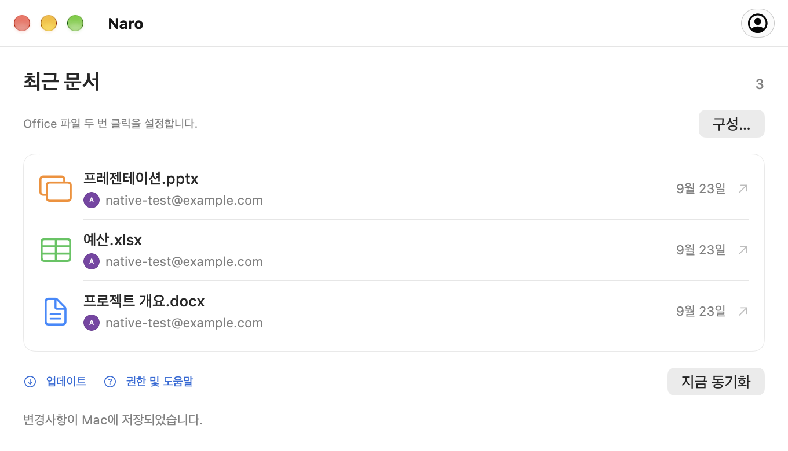

Google 계정을 연결하세요.
브라우저를 통해 로그인한 다음 계정 설정에서 Naro를 Office 파일용 기본 앱으로 설정하세요.
macOS에 연결된 Office 파일
Naro는 Google Docs, Sheets, Slides에서 Word, Excel, PowerPoint 파일을 연 다음 앱이 실행 중이고 온라인인 동안 저장된 변경 사항을 Mac에 다시 동기화하는 macOS 앱입니다.
Apple Silicon · macOS 26 이상에서 사용 가능
앱은 간결하게, 작업은 매끄럽게.
최근 파일입니다. 귀하의 Google 계정. 중단한 곳에서 다시 시작할 수 있는 친숙한 장소입니다.
자세히 살펴보기
익숙한 시작
평소처럼 두 번 클릭하고 반대편에는 Google 편집자가 있습니다.
브라우저를 통해 로그인한 다음 계정 설정에서 Naro를 Office 파일용 기본 앱으로 설정하세요.
Naro는 파일을 구글 드라이브에 업로드하고 일치하는 편집기를 엽니다. 계정이 여러 개인 경우 먼저 아바타를 선택하세요.
Naro가 실행 중이고 온라인 상태인 동안 Google이 저장한 변경 사항을 확인하고 로컬에 다시 기록하여 백업을 유지합니다.
편집자 3명. 하나의 앱.
문서, 스프레드시트, 프리젠테이션. 파일당 최대 100MB입니다.

로컬 문서에서 Google 문서도구로.
DOC · DOCX
Google 스프레드시트에서 스프레드시트를 엽니다.
XLS · XLSX
프레젠테이션을 Google 프레젠테이션으로 가져가세요.
PPT · PPTX문서에 사용하려는 Google 계정을 연결하세요. Naro는 귀하의 이름, 이메일, 프로필 사진을 사용하여 연결된 계정을 표시하고 올바른 계정을 선택하도록 도와줍니다. Naro는 귀하의 Google 비밀번호를 절대 받지 않습니다.
Naro로 로컬 Office 파일을 열면 해당 파일이 Google 드라이브에 업로드되고 브라우저에서 Google 편집기가 열립니다. 드라이브 액세스를 통해 Naro는 저장된 변경 사항을 검색하고 Mac에 다시 동기화할 수 있습니다. 액세스는 전체 드라이브가 아닌 Naro에서 생성되었거나 명시적으로 공유된 파일로 제한됩니다.
문서는 Mac과 Google 간에 직접 이동합니다. Naro에는 귀하의 문서를 수신하는 개발자 운영 서버가 없습니다. 로그인 토큰은 macOS 키체인에 유지됩니다.
필요할 때 도움을
첫 번째 파일에 대한 간단한 가이드,
다음 계정으로 모든 것이 동기화됩니다.
알아두면 좋아요
네. GitHub 릴리스에서 Naro 다운로드또는 Homebrew로 설치:
brew install --cask plexideas/tap/naro. 다운로드에는 Apple 개발자 ID 서명이 없으므로 macOS에서는 최초 실행을 명시적으로 허용해야 할 수도 있습니다.
편집은 브라우저의 Google Docs, Sheets, Slides에서 이루어집니다. Naro는 Finder에서 파일 열기, 계정 선택, Google이 저장한 변경 사항을 Mac으로 다시 가져오는 작업을 처리합니다.
Naro는 두 버전을 모두 유지하고 어느 버전을 계속할지 묻습니다. 또한 문서를 교체하기 전에 로컬 백업을 만듭니다. 동기화를 위해 Naro를 계속 실행하고 인터넷에 연결하세요.
호환성은 Google Office 편집기에 따라 다릅니다. 복잡한 서식, 매크로 및 기타 고급 기능은 유지되지 않을 수 있습니다. Google이 이전 DOC, XLS 또는 PPT 파일을 업그레이드하는 경우 Naro는 원본과 함께 최신 형식의 사본을 저장합니다. 파일을 별도의 Google 네이티브 문서로 변환하는 것은 원본 파일 링크로 추적되지 않습니다.
Naro는 macOS 26 이상을 실행하는 Apple Silicon Mac을 지원합니다. 앱은 GitHub 릴리스에서 업데이트를 확인할 수 있습니다. 업데이트 창에서 다운로드, 설치 및 다시 시작 시기를 선택합니다.